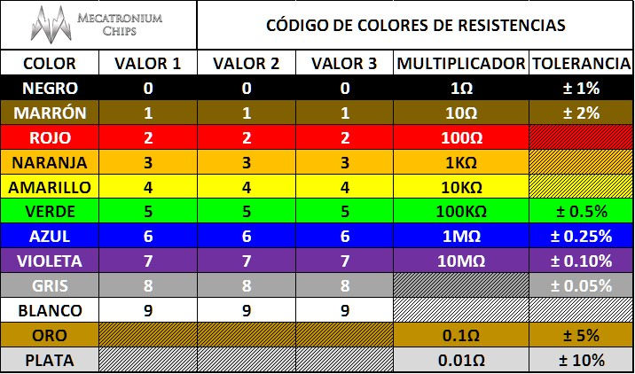

TECNOLOGÍA
TALLER DE TECNOLOGIA
CIRCUITOS ELECTRONICOS
Un circuito eléctrico es el conjunto de elementos eléctricos conectados entre sí que permiten generar, transportar y utilizar la energía eléctrica con la finalidad de transformarla en otro tipo de energía como, por ejemplo, energía calorífica (estufa), energía lumínica (bombilla) o energía mecánica (motor). Los elementos de un circuito eléctrico que se utilizan para conseguirlo son los siguientes:
• Generador. Parte del circuito donde se produce la electricidad, manteniendo una diferencia de tensión entre sus extremos.
• Conductor. Hilo por donde circulan los electrones impulsados por el generador.
• Resistencia eléctrica. Son elementos del circuito que se oponen al paso de la corriente eléctrica.
• Interruptor. Elemento que permite abrir o cerrar el paso de la corriente eléctrica. Si el interruptor está abierto no circulan los electrones y si está cerrado permite su paso.
RESISTENCIAS DE LOS CONDUCTORES ELECTRICOS
La resistencia es la oposición que encuentra la corriente eléctrica para pasar por los materiales y esta depende de tres factores:
1. El tipo de material. Cada material presenta una resistencia diferente y unas características propias, habiendo materiales más conductores que otros. A esta resistencia se le llama resistividad [ρ] y tiene un valor constante. Se mide [Ω·m].
2. La longitud. Cuanto mayor es la longitud del conductor, más resistencia ofrece. Se mide en metros [m].
3. La sección. Cuanto más grande es la sección, menos resistencia ofrece el conductor. Se mide en [m2].
La resistencia de un conductor se cuantifica en ohmios (Ω), y se puede calcular mediante la siguiente fórmula:
R = ρ · l / s
Interpretación del código de colores de una resistencia
Las resistencias comerciales (las que se acostumbran a usar para hacer prácticas de circuitos eléctricos) tienen cuatro anillos pintados que sirven para identificar su valor.
El primer anillo corresponde a la primera cifra; el segundo, a la segunda cifra; el tercero, al número de ceros, y el cuarto anillo, al límite de tolerancia de la resistencia. El código de colores de las resistencias es el siguiente:

Asociación de resistencias
Las resistencias (y otros elementos del circuito) pueden conectarse de dos formas diferentes:
1. Asociación en serie. Los elementos asociados se colocan uno a continuación del otro. La corriente eléctrica tiene un único camino por recorrer, habiendo así la misma intensidad en todo el circuito. Por ejemplo, en caso de tener cuatro resistencias conectadas en serie, la resistencia equivalente se puede calcular como:
Req = R1 + R2 + R3 + R4
2. Asociación en paralelo. Se crean derivaciones en el circuito. La corriente eléctrica que sale del generador tiene distintos caminos por recorrer. Por ejemplo, en caso de tener cuatro resistencias asociadas en paralelo, la resistencia equivalente del circuito se calcula como:
1/Req = 1/R1 + 1/R2 + 1/R3 + 1/R4
Todos los componentes de un circuito eléctrico son representados gráficamente mediante símbolos elementales aceptados por normas internacionales. Los esquemas de los circuitos eléctricos son dibujos simplificados que se utilizan para ver de forma clara y rápida como están conectados los circuitos.
La Ley de Ohm
La Ley de Ohm, impulsada en 1827 por el matemático y físico alemán Georg Simon Ohm, es una de las leyes fundamentales de la electrodinámica. Se utiliza para determinar la relación que existe entre la diferencia de potencial, la intensidad de corriente y la resistencia.
La ley de Ohm dice: "en un circuito eléctrico, la intensidad de la corriente que lo recorre es directamente proporcional a la tensión aplicada e inversamente proporcional a la resistencia que este presenta". Su fórmula es la siguiente:
V = R · I
La Ley Joule
La ley de Joule muestra la relación que existe entre el calor generado por una corriente eléctrica que circula por un conductor, la corriente misma, la resistencia del conductor y el tiempo que está circulando la corriente. Esta ley lleva el nombre del físico británico James Prescott Joule, quien en 1845 demostró que el calor es:
• Proporcional al tiempo durante el que pasa la corriente eléctrica.
• Proporcional al cuadrado de la intensidad que circula.
• Proporcional a la resistencia del conductor.
La fórmula es la siguiente:
W = R · I2 · t
El efecto Joule limita la corriente eléctrica que pueden transportar los cables de las conducciones eléctricas.